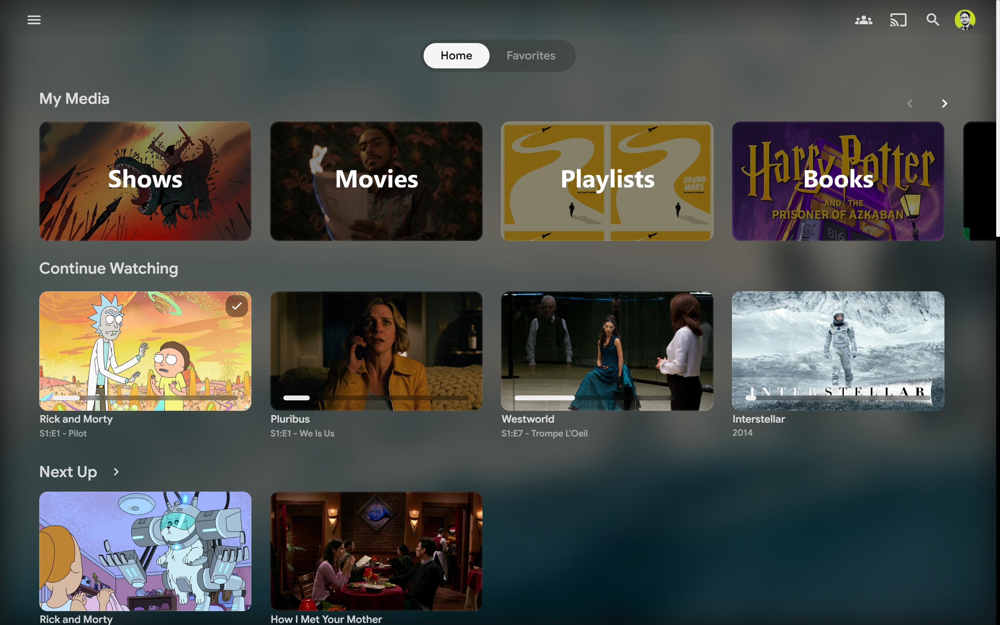
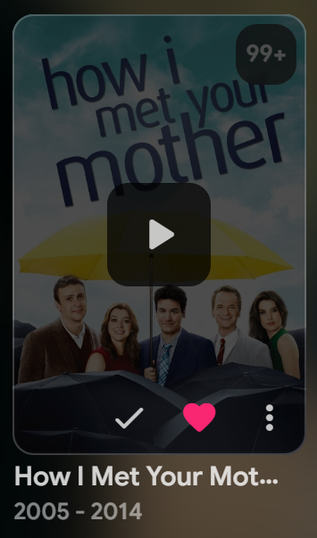
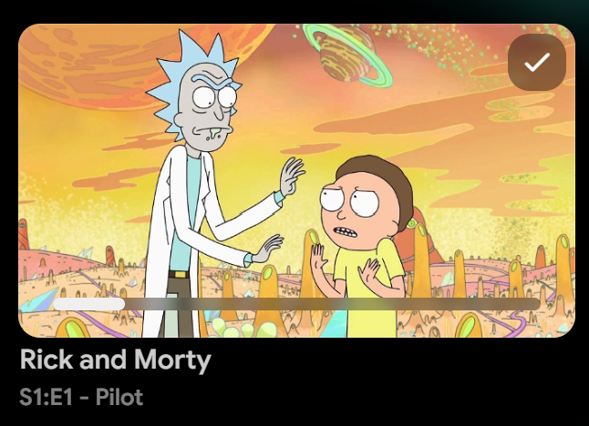
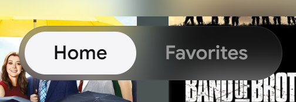
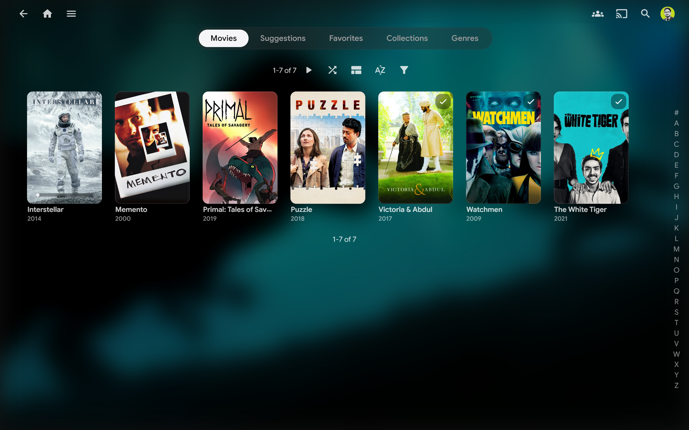
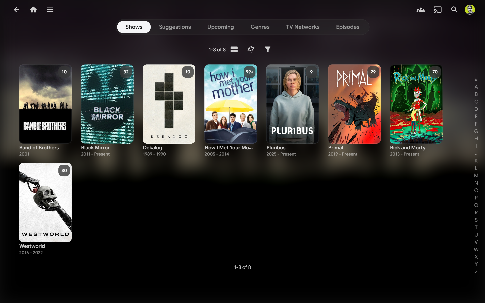
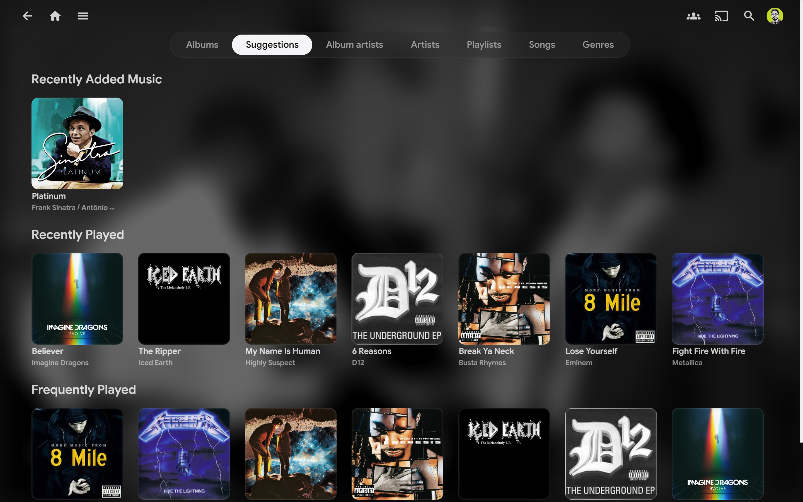
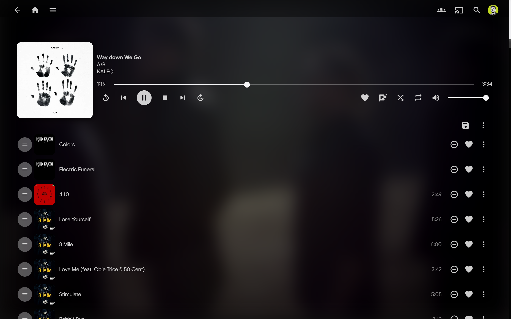
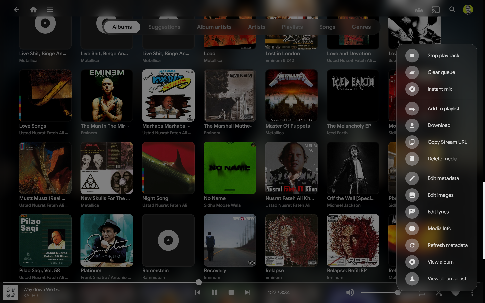

Frosted Glass UI
Header, drawer, dialogs, and footer use backdrop-filter blur for a layered,
depth-rich interface.
A clean, minimal dark theme. Frosted glass surfaces,
refined typography, and smooth
transitions.

Header, drawer, dialogs, and footer use backdrop-filter blur for a layered,
depth-rich interface.
Google Sans throughout, with consistent weight and spacing for a clean, readable experience.
Every interaction uses carefully tuned cubic-bezier easing curves for fluid, natural
motion.
Pill-shaped drawer with rounded corners, subtle border, and a snappy slide animation.
Active tab highlighted with a filled pill indicator, matching modern OS design patterns.
Three CSS variables - accent colour, corner radius, indicator style - let you retheme in seconds.
 Scrolled Home
Scrolled Home

Cards
Card Hover
UI Detail
Movies
Shows
Music Music Albums
Music Albums

Now Playing
QueueOverride variables after your import. Use the controls on the right to preview changes live in the code.
@import url('https://cdn.jsdelivr.net/gh/AumGupta/obsidian-jellyfin@main/obsidian.css');
/* Accent colour
Format: R, G, B (no rgb() wrapper)
Used for highlights, active states, progress bars. */
:root {
--obsidian-accent: 245, 245, 247;
--obsidian-radius: 12px;
--obsidian-indicator: 55, 55, 55;
}
/* Custom font: Import any Google Font and override body. */
@import url('https://fonts.googleapis.com/css2?family=Inter:wght@400;500;600&display=swap');
body {
font-family: "Inter", sans-serif;
}Paste into Dashboard → Branding → Custom CSS and save.
@import url('https://cdn.jsdelivr.net/gh/AumGupta/obsidian-jellyfin@main/obsidian.css');